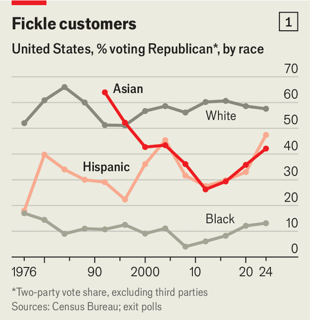
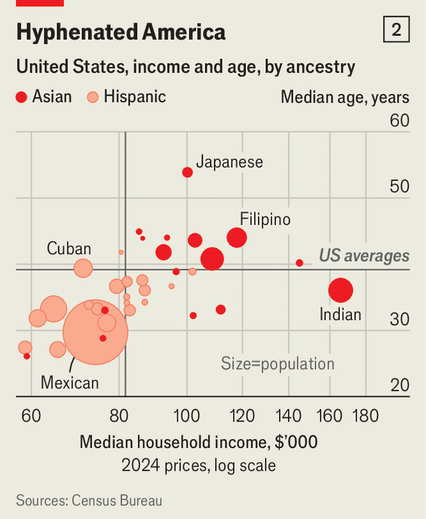
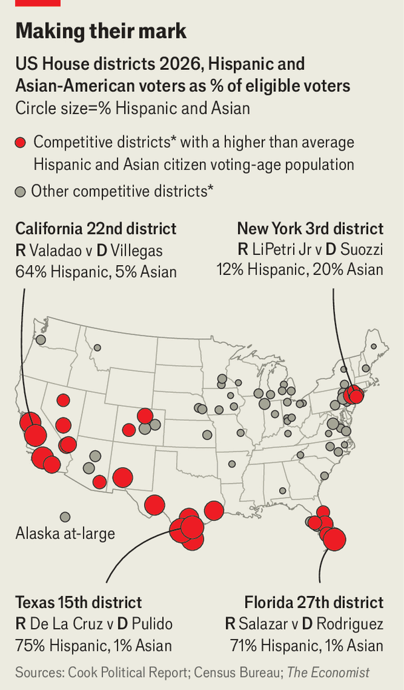

卡玛拉·哈里斯总统竞选的丧钟，最早是在弗吉尼亚州劳登县（Loudoun County）敲响的。这个县住着不少富裕选民，四分之一有亚裔血统，2020 年曾一边倒地投给乔·拜登。2024 年选举夜早些时候传出消息：哈里斯在这里只赢 16 个百分点，而拜登当年赢了 25 个，评论员一度怀疑计票出了故障。
如今这个县可能又往回摆。在一个提前投票站，志愿者用印地语发放样本选票。五十多岁的阿琼（Arjun）说自己两年前投了特朗普，现在有点「买家懊悔」：他说的每句话都是谎话。在热闹的帕特尔兄弟（Patel Brothers）超市门外，一位女士说她会投民主党，因为特朗普的削减让她残障孩子的照护断了供。其他前特朗普支持者说，他们被伊朗战争、高物价、签证缩减、残酷的驱逐和联邦裁员推开了。建筑师穆罕默德说，我很多朋友都丢了工作。
特朗普在劳登县人气下滑，某种程度上是全国趋势的缩影：全国口径上他的净支持率是负 27。但这种摆动——两年前倒向特朗普、此后又离开他——在美国并不是均匀分布的。它集中在一些地理上相隔很远、人口结构却惊人相似的州和选区：亚裔或拉美裔选民占比很高。
民主党和共和党都太容易把人口结构当成政治命运。左派以为非白人选民越来越多，就不必再去争取文化上保守的白人；共和党则担心移民会给民主党锁定长期权力。确实，有投票资格的拉美裔占比过去二十年从 9% 升到 16%，亚裔从 3% 升到 5%。但两边都错了：美国增长最快的族裔，恰恰也是政治上最不设防的族裔。这让这个国家最新的公民，在决定国家走向时握有超出比例的分量。
在这个移民国家，新来者塑造政党政治是贯穿历史的事。最近一波始于 1965 年，配额取消后人们重新涌入，主要来自拉美和亚洲。他们并没有变成死忠党员。出口民调显示，里根 1980 年拿到 37% 的拉美裔选票，他称这些人是「还不知道自己是共和党」的共和党人；小布什 2004 年拿到可观的 44%。1990 年代共和党在亚裔中表现更好，1992 和 1996 年连续赢得多数。
直到 2012 年，出口民调发现奥巴马拿下 73% 的亚裔和 71% 的拉美裔，战略家才开始把这两个群体当成可靠的民主党票仓。《大西洋月刊》2013 年一篇标题写道：有了新支持基础，奥巴马不再需要偏右的白人。特朗普 2016 年的胜利，似乎印证了共和党应当猛拉白人选票、而不必向少数族裔示好的思路。

chart: the economist
然而尽管特朗普的言论常带种族色彩，他在 2020 年拿到的拉美裔和亚裔选票仍略有上升，这一趋势在 2024 年加速：他赢得 40% 的亚裔票和 46% 的拉美裔票（见图 1）。按哈佛大学合作选举研究（CES）的数据，那次选举中亚裔和拉美裔占选民 14%，却占「2020 年投一个党、四年后改投另一党」人群的 24%。按绝对人数，他们还不是最大的摇摆群体：2024 年非拉美裔白人仍占改投者的 59%。但正是他们拒绝严格党派立场、人数在增长、改党的理由又很具体，才让他们格外有分量。
即使在 2012 年奥巴马赢得七成以上亚裔和拉美裔的时候，YouGov 为本刊做的民调显示，只有 13% 的亚裔和 27% 的拉美裔自认「坚定」民主党。拉美裔和亚裔的突出之处是立场不按谱：有些议题跟民主党站一起，有些跟共和党。本刊分析 CES 里一系列政策问题后发现，约 34% 的拉美裔和 30% 的亚裔持中间立场，或把左右主张混着用；白人选民这个比例只有 20%。拉美裔和亚裔在某个议题上的态度，较难预测他们在另一个议题上的态度。比如亚裔一边支持治理污染，一边支持给政府福利设工作要求；拉美裔比其他美国人更可能既支持限制堕胎，又支持免除学生债务。

chart: the economist
这种混搭部分来自群体之间和群体内部的文化差异，也来自收入跨度很大（见图 2）。它还提醒人们：新来者不会整齐地落进既有的格子。入籍公民绝大多数是拉美裔或亚裔。只有 9% 的亚裔和三分之一的拉美裔父母双方都在美国出生，白人这一比例是 90%、黑人是 77%，所以他们更少从家庭继承党派身份。
对这些选民来说，把大量且越来越多的白人绑在某个党身上的文化战争，没那么重要。经济议题压倒一切。YouGov 今年 9 月和 10 月为本刊做的民调里，把「物价」或「就业与经济」列为最重要议题的比例，亚裔和拉美裔都是 57%，黑人是 50%，白人是 45%。
这符合拉美裔和亚裔选民的整体优先级。他们工作时间比美国人平均更长。拉美裔创业的概率是白人的两倍多；亚裔在校时间更长。专门研究拉美裔民调的卡洛斯·奥迪奥（Carlos Odio）说，就算你自己不是移民，只是移民后代，你在这个国家就是为了拼命干活、往上走，这意味着经济考量排在很多事情前面。用民主党参议员鲁本·加列戈（Ruben Gallego）去年的说法：每个拉美男人都想要一辆大皮卡。这种车常被亲昵地叫作 la troquita。
这一切让拉美裔和亚裔在 2024 年成了完美的摇摆群体，那一年物价是压倒性议题。2022 年汽油价格飙升时，拉美裔受冲击尤其大，因为他们花在轿车、皮卡和燃油上的钱高于平均。到 2023 和 2024 年，通胀的影响转到住房成本，这又格外打中花在住房上更多的亚裔。今年轮到特朗普尝他们的怒火。
数字新闻公司 Argument 委托的一系列大样本民调显示，自 2024 年以来，民主党相对共和党的优势在拉美裔中扩大 17 个百分点，亚裔扩大 14 个，白人是 10 个，黑人是 5 个。民调的交叉表容易出错，但特朗普就职以来的州级选举显示同样趋势：去年新泽西和弗吉尼亚州长选举、今年 6 月加州的全党众议院初选，民主党相对 2024 年总统选举得票提升最多的地方，都是本州亚裔和拉美裔最集中的选区。
他们的不满会在中期选举中起关键作用。得州共和党强推的选区重划，本可为本党多拿最多五个众议院席位，前提是特朗普能守住他在拉美裔为主的南得州的新增优势。但本刊预测模型在其中三个选区看好民主党，另两个也只给共和党微弱优势。总计在 28 个摇摆众议院选区里，拉美裔和亚裔占比都高于平均（见图）。

chart: the economist
他们也会把分量带到高关注的州级选战。在特朗普票仓最大的两个州，他们合计占得州选民 36%、佛州 24%。两州州长选战民主党只落后几个点，主要靠拉美裔：佛州领先 12 点，得州领先 27 点。参议院方面，佛州翻盘不太可能。但在得州，詹姆斯·塔拉里科（James Talarico）总支持率领先 2 点、拉美裔中领先 33 点，正争取成为 1988 年以来第一位在该州赢下参议院席位的民主党人。
「我大半个职业生涯都在告诉那些善意的白人政治顾问和候选人：拉美裔不是一个整体，」民主党政治顾问查克·罗查（Chuck Rocha）说。他现在反过来说：「他们整体上都气炸了。」民主党正猛攻总统靠加关税和开战把物价推上去。
在加州尘土飞扬的农业区中央谷地，民主党人兰迪·比列加斯（Randy Villegas）正挑战温和派共和党人戴维·瓦拉道（David Valadao），这个选区三分之二的选民是拉美裔。请举手，比列加斯在贝克斯菲尔德的集会上说，如果你或你爱的人开车越过边境去蒂华纳买更便宜的药、更便宜的牙科、更便宜的医疗。满屋的手举了起来。
除经济之外，今年移民议题也很突出。这两个群体的选民按定义都已经是公民，总体上支持边境执法，对移民持中间立场。但他们认为总统的手段过火了。在佛州，迈阿密地区面临苦战的共和党现任议员玛丽亚·埃尔维拉·萨拉查（María Elvira Salazar）9 月投放了一则广告，直接对特朗普喊话：2024 年帮你进白宫的那些拉美裔，今天觉得被背叛了。
2025 年初，美国移民与海关执法局（ICE）曾盯上加州的农业腹地。中期选举前，他们又在这片地区巡行。在德拉诺（Delano）这个 2024 年向特朗普摆了 15 个点的农业小镇，店铺招牌大多是西班牙语，居民见面常互道一声「buenos días」。如今街道安静，不少店门紧闭。我就是不喜欢移民这块正在发生的事，34 岁的母亲格里斯尔达·阿吉拉尔（Griselda Aguilar）说。她两年前投了特朗普，这次来参加比列加斯的集会。处理方式太不人道。
竞选最后阶段，白宫非但没有缓和移民措辞，反而加码。副总统 J.D. 万斯鼓吹特朗普的驱逐行动，还想对技术工人签证做彻底改造。10 月 26 日在蒙大拿，他盛赞那些在这片土地上开垦定居、把亲人葬在这片美丽土壤里的美国人。特朗普则反复警告，且并无证据，非公民非法投票会危及选举公正。
这种执念对亚裔、拉美裔选民谈不上友好，也没有回应他们最关心的事：经济。如果他们帮民主党赢下选举，民主党可能会以为支持者回家了。但近几年的教训是，两党都不该把这些选民当作理所当然。就算更多亚裔和拉美裔向左摆，自认民主党人的比例仍比 2024 年更少。
「我们居然觉得拉美裔摆动 20 个点是件怪事，这本身就说明问题出在哪，」《拉美裔世纪》作者迈克·马德里（Mike Madrid）说。在其他群体里，「没人在经历疫情、战争、衰退、萧条之后还这么摆，」他说。「干得不好就该被解雇。拉美裔是唯一这么干的群体。」